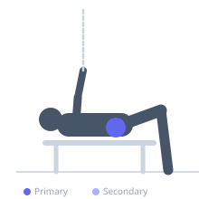
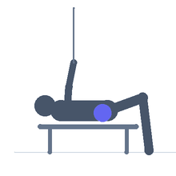

Exercise guide / Side-Lying Hip Abduction
Side-Lying Hip Abduction
Side-lying hip abduction is a classic rehabilitation exercise for the gluteus medius and tensor fasciae latae. Performed lying on the side with the top leg raised directly upward in the frontal plane, it provides direct strengthening of the hip abductors without requiring upright balance or complex movement patterns. It is prescribed for IT band syndrome, patellofemoral pain, hip weakness, low back pain, and as a foundational glute exercise for all populations.
Primary muscles
gluteus medius
gluteus minimus
Secondary muscles
tensor fasciae latae
Stabilizers
transverse abdominis
Equipment
No Equipment (Bodyweight)
Optional
Resistance Band (Loop / Mini Band)


Starting position
- Lie on one side with the body in a straight line. The bottom arm extends under the head. The top leg is straight and stacked on the bottom leg.
Setup
- No equipment required. A resistance band loop above the knees may be added for progressive resistance.
Steps
- Step 1: Lie on one side with hips stacked and both legs straight.
- Step 2: Turn the top foot slightly toward the floor (internal rotation) to target the posterior fibers of the gluteus medius.
- Step 3: Raise the top leg toward the ceiling, keeping it in line with the torso (not in front of it).
- Step 4: Raise to approximately 30–45 degrees — not so high that the pelvis rotates.
- Step 5: Slowly lower the leg back to the starting position with control. Do not let it rest on the bottom leg between reps.
Coaching cues
- Lead with the heel — think about reaching the heel up to the ceiling
- Keep the hip stacked and do not let it roll backward
- Slight internal rotation of the foot targets the best part of the glute med
Breathing
- Exhale as the leg lifts. Inhale as it lowers.
Range of motion
- Raise the leg 30–45 degrees from the floor. Keep the movement in the frontal plane.
Tempo
- 2-second lift, 1-second hold, 2-second lower. 15–20 reps × 2–3 sets per side.
Common mistakes
- Letting the top hip roll forward — the pelvis must stay stacked
- Raising the leg too far, which recruits the hip flexors and reduces glute med isolation
- Pointing the top toe toward the ceiling (external rotation) — slight internal rotation targets the posterior glute med
Safety
- Safe for all rehabilitation populations including post-partum and elderly
- If lateral hip pain occurs with the band, try without band first
Training
- strength: 15–20 reps
- strength: 2–3 sets
- Rest: {'strength': 60}